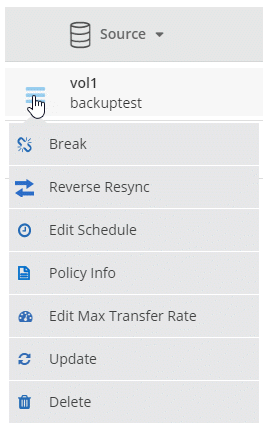
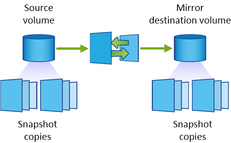
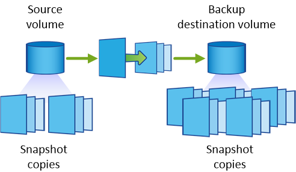

请求文档变更
请求文档变更 在 GitHub 上编辑
在 GitHub 上编辑 提供者指南
提供者指南在系统之间复制数据
您可以在工作环境之间复制数据、方法是选择一次性数据复制以进行数据传输、或者选择灾难恢复或长期保留的重复计划。例如，您可以设置从内部 ONTAP 系统到 Cloud Volumes ONTAP 的数据复制，以便进行灾难恢复。
使用 SnapMirror 和 SnapVault 技术、 Cloud Manager 可以简化不同系统上卷之间的数据复制。您只需标识源卷和目标卷、然后选择复制策略和计划即可。Cloud Manager 购买所需的磁盘、配置关系、应用复制策略、然后启动卷之间的基准传输。

|
基线传输包括源数据的完整副本。后续传输包含源数据的差异副本。 |
数据复制要求
在复制数据之前、您应该确认是否满足了 Cloud Volumes ONTAP 系统和 ONTAP 集群的特定要求。
- 版本要求
-
在复制数据之前，您应该验证源卷和目标卷是否运行兼容的 ONTAP 版本。有关详细信息，请参见 "数据保护高级指南"。
- 特定于 Cloud Volumes ONTAP 的要求
-
-
实例的安全组必须包含所需的入站和出站规则：具体来说，是 ICMP 以及端口 10000 ， 11104 和 11105 的规则。
这些规则包括在预定义的安全组中。
-
要在不同子网的两个 Cloud Volumes ONTAP 系统之间复制数据、必须将子网路由在一起（这是默认设置）。
-
要在 AWS 中的 Cloud Volumes ONTAP 系统和 Azure 中的系统之间复制数据，您必须在 AWS VPC 和 Azure VNet 之间建立 VPN 连接。
-
- 特定于 ONTAP 集群的要求
-
-
必须安装活动 SnapMirror 许可证。
-
如果集群位于您的内部，则您应该从公司网络连接到 AWS 或 Azure （通常是 VPN 连接）。
-
ONTAP 集群必须满足其他子网、端口、防火墙和集群要求。
有关详细信息，请参见适用于您的 ONTAP 版本的集群和 SVM 对等快速指南。
-
在系统之间设置数据复制
您可以在 Cloud Volumes ONTAP 系统和 ONTAP 集群之间复制数据、方法是选择一次性数据复制、该复制可以帮助您将数据移入或移出云、或定期计划、这有助于灾难恢复或长期保留。
Cloud Manager 支持简单、扇出和级联数据保护配置：
-
在简单的配置中、从卷 A 复制到卷 B
-
在扇出配置中、从卷 A 复制到多个目标。
-
在级联配置中、从卷 A 复制到卷 B 、从卷 B 复制到卷 C
通过在系统之间设置多个数据复制、您可以在 Cloud Manager 中配置扇出和级联配置。例如，将卷从系统 A 复制到系统 B 、然后将同一卷从系统 B 复制到系统 C
-
在 " 工作环境 " 页上、选择包含源卷的工作环境、然后将其拖到要将卷复制到的工作环境中：

-
如果出现源和目标对等设置页，请为集群对等关系选择所有集群间 LIF 。
应配置集群间网络，使集群对等方具有 _ 成对的全网状连接 _ ，这意味着集群对等关系中的每个集群对都在其所有集群间 LIF 之间建立连接。
如果具有多个 LIF 的 ONTAP 集群是源或目标，则会显示这些页面。
-
在 " 源卷选择 " 页面上，选择要复制的卷。
-
在目标卷名称和分层页面上，指定目标卷名称，选择底层磁盘类型，更改任何高级选项，然后单击 * 继续 * 。
如果目标是 ONTAP 集群、则还必须指定目标 SVM 和聚合。
-
在“最大传输速率”页面上，指定数据传输的最大速率（以兆字节 / 秒为单位）。
-
在复制策略页面上，选择一个默认策略或单击 * 其他策略 * ，然后选择一个高级策略。
有关帮助，请参见 "选择复制策略"。
如果选择自定义备份（ SnapVault ）策略、与策略关联的标签必须与源卷上 Snapshot 副本的标签匹配。有关详细信息，请参见 "备份策略的工作原理"。
-
在“计划”页面上，选择一次性副本或重复计划。
有多个默认计划可用。如果您需要其他计划，则必须使用 System Manager 在 _destination_cluster 上创建一个新计划。
-
在 Review 页面上，查看您选择的内容，然后单击 * 执行 * 。
Cloud Manager 将启动数据复制过程。您可以在“复制状态”页面中查看有关复制的详细信息。
管理数据复制计划和关系
在两个系统之间设置数据复制后、您可以从 Cloud Manager 管理数据复制计划和关系。
-
在工作环境页面上，查看工作空间中所有工作环境或特定工作环境的复制状态：
选项 Action 工作空间中的所有工作环境
在 Cloud Manager 顶部，单击 * 复制状态 * 。
特定的工作环境
打开工作环境，然后单击 * 复制 * 。
-
检查数据复制关系的状态以验证它们是否正常。
如果关系的状态为空闲且镜像状态未初始化，则必须初始化目标系统的关系，以便根据定义的计划进行数据复制。您可以使用系统管理器或命令行界面（ CLI ）初始化关系。当目标系统发生故障后又重新联机时，可能会显示这些状态。 -
选择源卷旁边的菜单图标，然后选择一个可用操作。

下表介绍了可用的操作：
Action Description 中断
断开源卷和目标卷之间的关系、并激活目标卷以进行数据访问。当源卷由于数据损坏、意外删除或脱机状态等事件而无法提供数据时，通常会使用此选项。有关为数据访问配置目标卷和重新激活源卷的信息、请参见《 ONTAP 9 卷灾难恢复快速指南》。
重新同步
重新建立卷之间断开的关系并根据定义的计划恢复数据复制。

重新同步卷时、目标卷上的内容将被源卷上的内容覆盖。 要执行反向重新同步，以便将数据从目标卷重新同步到源卷，请参见 "《 ONTAP 9 卷灾难恢复快速指南》"。
反向重新同步
反转源卷和目标卷的角色。原始源卷中的内容将被目标卷的内容覆盖。当您要重新激活脱机的源卷时，这非常有用。在上次数据复制和源卷禁用之间写入到原始源卷的任何数据都不会保留。
编辑计划
允许您为数据复制选择不同的计划。
策略信息
显示分配给数据复制关系的保护策略。
编辑最大传输速率
允许您编辑数据传输的最大速率（以千字节 / 秒为单位）。
更新
启动增量传输以更新目标卷。
删除
删除源卷和目标卷之间的数据保护关系，这意味着数据复制不再发生在卷之间。此操作不会激活目标卷以进行数据访问。如果系统之间没有其他数据保护关系，此操作还会删除集群对等关系和存储虚拟机（ SVM ）对等关系。
选择操作后、 Cloud Manager 将更新关系或计划。
选择复制策略
在 Cloud Manager 中设置数据复制时，您可能需要有关选择复制策略的帮助。复制策略定义存储系统如何将数据从源卷复制到目标卷。
复制策略的作用
ONTAP 操作系统会自动创建称为 Snapshot 副本的备份。Snapshot 副本是卷的只读映像、可在某个时间点捕获文件系统的状态。
在系统之间复制数据时、您会将 Snapshot 副本从源卷复制到目标卷。复制策略指定要从源卷复制到目标卷的快照副本。

|
复制策略也称为 protection 策略，因为它们由 SnapMirror 和 SnapVault 技术提供支持，这些技术可提供灾难恢复保护以及磁盘到磁盘备份和恢复。 |
下图显示了 Snapshot 副本和复制策略之间的关系：

复制策略的类型
复制策略有三种类型：
-
Mirror 策略会将新创建的 Snapshot 副本复制到目标卷。
您可以使用这些 Snapshot 副本保护源卷、为灾难恢复或一次性数据复制做好准备。您可以随时激活目标卷以进行数据访问。
-
Backup 策略会将特定 Snapshot 副本复制到目标卷，并且这些副本的保留时间通常比源卷上的保留时间长。
您可以在数据损坏或丢失时从这些 Snapshot 副本中恢复数据、并保留这些数据以符合标准和其他与管理相关的目的。
-
Mirror and Backup 策略可提供灾难恢复和长期保留。
每个系统都包括一个默认镜像和备份策略、它可以在许多情况下正常工作。如果您发现需要自定义策略、则可以使用 System Manager 创建自己的策略。
以下映像显示镜像策略和备份策略之间的区别。镜像策略镜像源卷上可用的 Snapshot 副本。

备份策略通常保留 Snapshot 副本的时间比保留在源卷上的时间长：

备份策略的工作原理
与镜像策略不同、备份（ SnapVault ）策略将特定的 Snapshot 副本复制到目标卷。如果要使用自己的策略而不是默认策略、了解备份策略的工作原理非常重要。
了解 Snapshot 副本标签与备份策略之间的关系
Snapshot 策略定义系统如何创建卷的 Snapshot 副本。该策略指定创建 Snapshot 副本的时间、要保留的副本数量以及如何对其进行标记。例如，系统可能每天在上午 12 点 10 分创建一个 Snapshot 副本、保留最近的两个副本并将其标记为“每日”。
备份策略包括指定要复制到目标卷的标有 Snapshot 副本以及要保留的副本数量的规则。备份策略中定义的标签必须与快照策略中定义的一个或多个标签匹配。否则，系统将无法复制任何 Snapshot 副本。
例如，包含标签“ daily ”和“ weekly ”的备份策略会导致复制仅包含这些标签的 Snapshot 副本。不会复制其他 Snapshot 副本，如下图所示：

默认策略和自定义策略
默认 Snapshot 策略会创建每小时、每天和每周 Snapshot 副本、保留六个小时、每天两个和每周两个 Snapshot 副本。
您可以轻松地将默认备份策略与默认快照策略一起使用。默认备份策略复制每日和每周 Snapshot 副本、保留每天七个 Snapshot 副本和每周 52 个 Snapshot 副本。
如果创建自定义策略，则这些策略定义的标签必须匹配。您可以使用 System Manager 创建自定义策略。